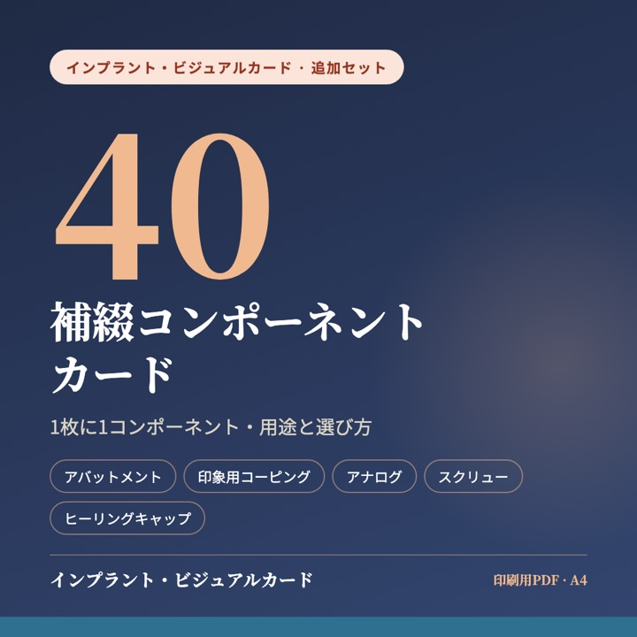

補綴コンポーネント・カード40
追加でご購入いただいた教材です。下のボタンからPDFを開き、保存・印刷してお使いください。
40カード
8グループ
40確認問題

補綴コンポーネント・カード40
アバットメント、スクリュー、アタッチメント、印象用パーツまで、40の補綴コンポーネントを1枚1テーマで。用途・選び方・締結トルクの目安・よくある落とし穴と確認問題つき。
PDFを開く・保存 ›はじめ方
- まず目次でグループを確認8グループ×5枚。いま扱っている症例に近いグループから開きます。
- 1日5枚ずつ読む各カードの「要点」と数値を読み、最後の確認問題に答えます。
- チェアサイドに印刷して置くA4で印刷し、補綴の準備のときにすぐ見返せるようにします。
NEXT STEP次のステップ
今日はグループ1の5枚を読み、それぞれの確認問題に答えましょう。15分ほどで終わります。
歯科医師・歯科医学生のための学習・復習用の教材です。症例はすべて架空のものです。実際の診療では、各メーカーの指示と最新のガイドライン、ご自身の臨床判断を優先してください。